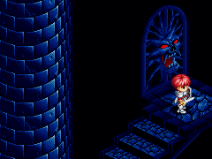
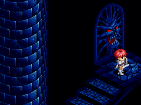

ダームの塔 13 階で「SILVER ARMER」を取り戻す

ダームの塔 14 階へ移動
ダームの塔 15 階で「BATTLE SHIELD」を入手
ダームの塔 16 階からラドの塔へ移動
ラドの塔 3 階で、「ブルーネックレス」、「EVEL RING」を装備し、扉を開く

レアと出会い、「メガネ」を入手
目次 > ゲームについて > 日本Falcom 攻略 > Ys > 攻略チャート > エンディングまで
らんの眼
Ys(イース) Ys Eternal(VE)/Ys Complete
| 概要 | 情報 | ボス戦 |
| 敵キャラ一覧 | アイテム一覧 | 攻略チャート |
| 地図 | ダウンロード | イースの本 |
| 経験値表 | 地名一覧 | タイムアタック |
| ETERNAL / Complete 比較 | キャラクター一覧 | |
| Ys 攻略へ | 目次へ戻る |
| [ ～サルモン神殿 ] [ ～廃坑 ] [ ～ダームの塔 ] [ ～ダームの塔14 階 ] [ ～エンディング ] |
| レアとの再会まで |
| ダームの塔 13 階へ戻る ダームの塔 13 階で「SILVER ARMER」を取り戻す ダームの塔 14 階へ移動 ダームの塔 15 階で「BATTLE SHIELD」を入手 ダームの塔 16 階からラドの塔へ移動 ラドの塔 3 階で、「ブルーネックレス」、「EVEL RING」を装備し、扉を開く  レアと出会い、「メガネ」を入手 |
| エンディングまで |
ダームの塔 11 階へ戻り、メガネを装着した状態で、ルタ＝ジェンマの前で「イースの本」を全て読む ルタ＝ジェンマに話しかけ、「ブルーアミュレット」を入手 ダームの塔 15 階まで移動 ダームの塔 16 階を通過 ダームの塔 17 階を「ミラー」を使い通過 ダームの塔 18 階から19 階へ移動し、「BATTLE ARMER」を入手(ブルーネックレスを装備している必要があります) ダームの塔 18 階へ戻る ダームの塔 20 階へ移動し、「FLAME SWORD」を入手 ダームの塔 21 階でヨグレクス&オムルガン戦 ブルーアミュレットを装備し、ダームの塔 25 階の扉を開く 「SILVER SWORD」、「SILVER SHIELD」、「SILVER ARMER」を装備する ダルク＝ファクト戦 マントの下から「イースの本」を入手 「メガネ」を装着し、「イースの本」を読む エンディング |
| [ ～サルモン神殿 ] [ ～廃坑 ] [ ～ダームの塔 ] [ ～ダームの塔14 階 ] [ ～エンディング ] |
| 概要 | 情報 | ボス戦 |
| 敵キャラ一覧 | アイテム一覧 | 攻略チャート |
| 地図 | ダウンロード | イースの本 |
| 経験値表 | 地名一覧 | タイムアタック |
| ETERNAL / Complete 比較 | キャラクター一覧 | |
| ページ上部へ | Ys 攻略へ | 目次へ戻る |